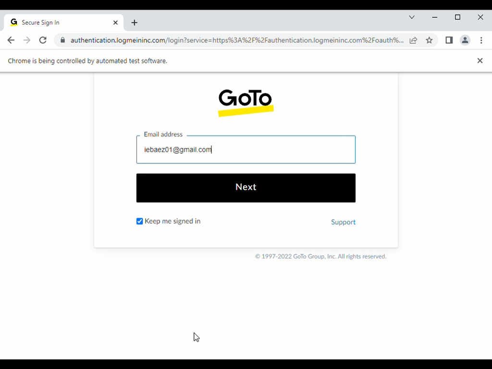

Reporte con resultados de la prueba (en html)
en esta primera imajen podemos ver que el sistema ya esta detectando una anomalia por eso precenta ese mensaje ya que a notado algo raro en la misma se puede ver como nos salta el error de privacidad al momento de estrar con el bot
en esta imagen vemos como el bot empiaza a simular de manera automatica el procedimiento normal de que aria un usuario al intentar ingresar a la app
Aqui vemos que despues de validar el correo pasa auntomaticamente a la siguiente face la cual es ingresar la contraseña con el bot esta diseñado para que en el caso de no poder hacer un procedimiento se cierre
En esta el bot realizo la ultima operacion e intentento validar la contraseña para entrar a la interface de usuario en caso de no acceder el bot se detendra